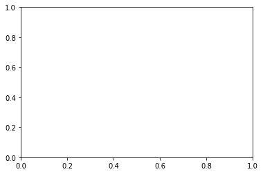

Video notebooks
Contents
Video notebooks¶
MNIST dataset¶
Based on Chapter 3 of Hands-On Machine Learning (2nd edition) by Aurélien Géron.
import numpy as np
import pandas as pd
from sklearn.datasets import fetch_openml
# Will take about one minute to run
mnist = fetch_openml('mnist_784', version = 1)
mnist.keys()
dict_keys(['data', 'target', 'frame', 'categories', 'feature_names', 'target_names', 'DESCR', 'details', 'url'])
type(mnist)
sklearn.utils.Bunch
X = mnist['data']
type(X)
pandas.core.frame.DataFrame
y = mnist['target']
type(y)
pandas.core.series.Series
X.shape
(70000, 784)
X.info()
<class 'pandas.core.frame.DataFrame'>
RangeIndex: 70000 entries, 0 to 69999
Columns: 784 entries, pixel1 to pixel784
dtypes: float64(784)
memory usage: 418.7 MB
X.head()
| pixel1 | pixel2 | pixel3 | pixel4 | pixel5 | pixel6 | pixel7 | pixel8 | pixel9 | pixel10 | ... | pixel775 | pixel776 | pixel777 | pixel778 | pixel779 | pixel780 | pixel781 | pixel782 | pixel783 | pixel784 | |
|---|---|---|---|---|---|---|---|---|---|---|---|---|---|---|---|---|---|---|---|---|---|
| 0 | 0.0 | 0.0 | 0.0 | 0.0 | 0.0 | 0.0 | 0.0 | 0.0 | 0.0 | 0.0 | ... | 0.0 | 0.0 | 0.0 | 0.0 | 0.0 | 0.0 | 0.0 | 0.0 | 0.0 | 0.0 |
| 1 | 0.0 | 0.0 | 0.0 | 0.0 | 0.0 | 0.0 | 0.0 | 0.0 | 0.0 | 0.0 | ... | 0.0 | 0.0 | 0.0 | 0.0 | 0.0 | 0.0 | 0.0 | 0.0 | 0.0 | 0.0 |
| 2 | 0.0 | 0.0 | 0.0 | 0.0 | 0.0 | 0.0 | 0.0 | 0.0 | 0.0 | 0.0 | ... | 0.0 | 0.0 | 0.0 | 0.0 | 0.0 | 0.0 | 0.0 | 0.0 | 0.0 | 0.0 |
| 3 | 0.0 | 0.0 | 0.0 | 0.0 | 0.0 | 0.0 | 0.0 | 0.0 | 0.0 | 0.0 | ... | 0.0 | 0.0 | 0.0 | 0.0 | 0.0 | 0.0 | 0.0 | 0.0 | 0.0 | 0.0 |
| 4 | 0.0 | 0.0 | 0.0 | 0.0 | 0.0 | 0.0 | 0.0 | 0.0 | 0.0 | 0.0 | ... | 0.0 | 0.0 | 0.0 | 0.0 | 0.0 | 0.0 | 0.0 | 0.0 | 0.0 | 0.0 |
5 rows × 784 columns
X.iloc[0]
pixel1 0.0
pixel2 0.0
pixel3 0.0
pixel4 0.0
pixel5 0.0
...
pixel780 0.0
pixel781 0.0
pixel782 0.0
pixel783 0.0
pixel784 0.0
Name: 0, Length: 784, dtype: float64
A_pre = X.iloc[0].to_numpy()
type(A_pre)
numpy.ndarray
A_pre.shape
(784,)
28**2
784
A = A_pre.reshape(28,28)
A.shape
(28, 28)
A
array([[ 0., 0., 0., 0., 0., 0., 0., 0., 0., 0., 0.,
0., 0., 0., 0., 0., 0., 0., 0., 0., 0., 0.,
0., 0., 0., 0., 0., 0.],
[ 0., 0., 0., 0., 0., 0., 0., 0., 0., 0., 0.,
0., 0., 0., 0., 0., 0., 0., 0., 0., 0., 0.,
0., 0., 0., 0., 0., 0.],
[ 0., 0., 0., 0., 0., 0., 0., 0., 0., 0., 0.,
0., 0., 0., 0., 0., 0., 0., 0., 0., 0., 0.,
0., 0., 0., 0., 0., 0.],
[ 0., 0., 0., 0., 0., 0., 0., 0., 0., 0., 0.,
0., 0., 0., 0., 0., 0., 0., 0., 0., 0., 0.,
0., 0., 0., 0., 0., 0.],
[ 0., 0., 0., 0., 0., 0., 0., 0., 0., 0., 0.,
0., 0., 0., 0., 0., 0., 0., 0., 0., 0., 0.,
0., 0., 0., 0., 0., 0.],
[ 0., 0., 0., 0., 0., 0., 0., 0., 0., 0., 0.,
0., 3., 18., 18., 18., 126., 136., 175., 26., 166., 255.,
247., 127., 0., 0., 0., 0.],
[ 0., 0., 0., 0., 0., 0., 0., 0., 30., 36., 94.,
154., 170., 253., 253., 253., 253., 253., 225., 172., 253., 242.,
195., 64., 0., 0., 0., 0.],
[ 0., 0., 0., 0., 0., 0., 0., 49., 238., 253., 253.,
253., 253., 253., 253., 253., 253., 251., 93., 82., 82., 56.,
39., 0., 0., 0., 0., 0.],
[ 0., 0., 0., 0., 0., 0., 0., 18., 219., 253., 253.,
253., 253., 253., 198., 182., 247., 241., 0., 0., 0., 0.,
0., 0., 0., 0., 0., 0.],
[ 0., 0., 0., 0., 0., 0., 0., 0., 80., 156., 107.,
253., 253., 205., 11., 0., 43., 154., 0., 0., 0., 0.,
0., 0., 0., 0., 0., 0.],
[ 0., 0., 0., 0., 0., 0., 0., 0., 0., 14., 1.,
154., 253., 90., 0., 0., 0., 0., 0., 0., 0., 0.,
0., 0., 0., 0., 0., 0.],
[ 0., 0., 0., 0., 0., 0., 0., 0., 0., 0., 0.,
139., 253., 190., 2., 0., 0., 0., 0., 0., 0., 0.,
0., 0., 0., 0., 0., 0.],
[ 0., 0., 0., 0., 0., 0., 0., 0., 0., 0., 0.,
11., 190., 253., 70., 0., 0., 0., 0., 0., 0., 0.,
0., 0., 0., 0., 0., 0.],
[ 0., 0., 0., 0., 0., 0., 0., 0., 0., 0., 0.,
0., 35., 241., 225., 160., 108., 1., 0., 0., 0., 0.,
0., 0., 0., 0., 0., 0.],
[ 0., 0., 0., 0., 0., 0., 0., 0., 0., 0., 0.,
0., 0., 81., 240., 253., 253., 119., 25., 0., 0., 0.,
0., 0., 0., 0., 0., 0.],
[ 0., 0., 0., 0., 0., 0., 0., 0., 0., 0., 0.,
0., 0., 0., 45., 186., 253., 253., 150., 27., 0., 0.,
0., 0., 0., 0., 0., 0.],
[ 0., 0., 0., 0., 0., 0., 0., 0., 0., 0., 0.,
0., 0., 0., 0., 16., 93., 252., 253., 187., 0., 0.,
0., 0., 0., 0., 0., 0.],
[ 0., 0., 0., 0., 0., 0., 0., 0., 0., 0., 0.,
0., 0., 0., 0., 0., 0., 249., 253., 249., 64., 0.,
0., 0., 0., 0., 0., 0.],
[ 0., 0., 0., 0., 0., 0., 0., 0., 0., 0., 0.,
0., 0., 0., 46., 130., 183., 253., 253., 207., 2., 0.,
0., 0., 0., 0., 0., 0.],
[ 0., 0., 0., 0., 0., 0., 0., 0., 0., 0., 0.,
0., 39., 148., 229., 253., 253., 253., 250., 182., 0., 0.,
0., 0., 0., 0., 0., 0.],
[ 0., 0., 0., 0., 0., 0., 0., 0., 0., 0., 24.,
114., 221., 253., 253., 253., 253., 201., 78., 0., 0., 0.,
0., 0., 0., 0., 0., 0.],
[ 0., 0., 0., 0., 0., 0., 0., 0., 23., 66., 213.,
253., 253., 253., 253., 198., 81., 2., 0., 0., 0., 0.,
0., 0., 0., 0., 0., 0.],
[ 0., 0., 0., 0., 0., 0., 18., 171., 219., 253., 253.,
253., 253., 195., 80., 9., 0., 0., 0., 0., 0., 0.,
0., 0., 0., 0., 0., 0.],
[ 0., 0., 0., 0., 55., 172., 226., 253., 253., 253., 253.,
244., 133., 11., 0., 0., 0., 0., 0., 0., 0., 0.,
0., 0., 0., 0., 0., 0.],
[ 0., 0., 0., 0., 136., 253., 253., 253., 212., 135., 132.,
16., 0., 0., 0., 0., 0., 0., 0., 0., 0., 0.,
0., 0., 0., 0., 0., 0.],
[ 0., 0., 0., 0., 0., 0., 0., 0., 0., 0., 0.,
0., 0., 0., 0., 0., 0., 0., 0., 0., 0., 0.,
0., 0., 0., 0., 0., 0.],
[ 0., 0., 0., 0., 0., 0., 0., 0., 0., 0., 0.,
0., 0., 0., 0., 0., 0., 0., 0., 0., 0., 0.,
0., 0., 0., 0., 0., 0.],
[ 0., 0., 0., 0., 0., 0., 0., 0., 0., 0., 0.,
0., 0., 0., 0., 0., 0., 0., 0., 0., 0., 0.,
0., 0., 0., 0., 0., 0.]])
import matplotlib.pyplot as plt
fig, ax = plt.subplots()

ax.imshow(A)
<matplotlib.image.AxesImage at 0x16b927700>
fig

ax.imshow(A, cmap='binary')
<matplotlib.image.AxesImage at 0x16b947f40>
fig
y
0 5
1 0
2 4
3 1
4 9
..
69995 2
69996 3
69997 4
69998 5
69999 6
Name: class, Length: 70000, dtype: category
Categories (10, object): ['0', '1', '2', '3', ..., '6', '7', '8', '9']
B = X.iloc[2].to_numpy().reshape(28,28)
fig2, ax2 = plt.subplots()

ax2.imshow(B)
fig2
y.iloc[2]
'4'
train_test_split¶
from sklearn.model_selection import train_test_split
X_train, X_test, y_train, y_test = train_test_split(X,y,test_size=0.2)
X_train.shape
(56000, 784)
type(X_train)
pandas.core.frame.DataFrame
y_train.shape
(56000,)
X_test.shape
(14000, 784)
y_test.shape
(14000,)
Logistic Regression¶
from sklearn.linear_model import LogisticRegression
clf = LogisticRegression()
clf.fit(X_train, y_train)
/Users/christopherdavis/miniconda3/envs/math11/lib/python3.9/site-packages/sklearn/linear_model/_logistic.py:814: ConvergenceWarning: lbfgs failed to converge (status=1):
STOP: TOTAL NO. of ITERATIONS REACHED LIMIT.
Increase the number of iterations (max_iter) or scale the data as shown in:
https://scikit-learn.org/stable/modules/preprocessing.html
Please also refer to the documentation for alternative solver options:
https://scikit-learn.org/stable/modules/linear_model.html#logistic-regression
n_iter_i = _check_optimize_result(
LogisticRegression()
clf.predict(X_train)
array(['4', '8', '4', ..., '8', '2', '5'], dtype=object)
clf.predict(X_test)
array(['3', '9', '9', ..., '5', '6', '2'], dtype=object)
y_test
8230 3
2014 7
34476 9
22574 4
32292 2
..
9494 7
31432 1
40920 5
43678 6
42686 2
Name: class, Length: 14000, dtype: category
Categories (10, object): ['0', '1', '2', '3', ..., '6', '7', '8', '9']
clf.predict(X_test) == y_test
8230 True
2014 False
34476 True
22574 True
32292 True
...
9494 True
31432 True
40920 True
43678 True
42686 True
Name: class, Length: 14000, dtype: bool
np.count_nonzero(clf.predict(X_test) == y_test)/len(X_test)
0.9177142857142857
It’s a little more accurate on the training set, but not too much higher:
np.count_nonzero(clf.predict(X_train) == y_train)/len(X_train)
0.9355178571428572
Predicted probabilities¶
clf.predict(X_test)
array(['3', '9', '9', ..., '5', '6', '2'], dtype=object)
probs = clf.predict_proba(X_test)
probs.shape
(14000, 10)
probs[0]
array([1.76758242e-08, 2.97691803e-06, 2.38626083e-04, 9.97352680e-01,
1.68455923e-08, 9.07302608e-04, 3.68355263e-08, 1.37718577e-06,
1.27881787e-03, 2.18147526e-04])
probs[0].argmax()
3
clf.classes_
array(['0', '1', '2', '3', '4', '5', '6', '7', '8', '9'], dtype=object)
probs[0].sum()
0.9999999999999999
probs.sum(axis=1)
array([1., 1., 1., ..., 1., 1., 1.])
probs.argmax(axis=1)
array([3, 9, 9, ..., 5, 6, 2])
probs[2]
array([7.53581914e-10, 1.75100873e-08, 7.47874484e-05, 7.36401327e-06,
1.68733779e-01, 7.83711931e-07, 7.33581753e-07, 8.91478943e-02,
8.29234689e-05, 7.41951717e-01])
probs[2,3]
7.364013266823752e-06
probs[2,8]
8.292346886064084e-05
B = X_test.iloc[2].to_numpy().reshape(28,28)
fig2, ax2 = plt.subplots()
ax2.imshow(B)
<matplotlib.image.AxesImage at 0x16c34ed00>